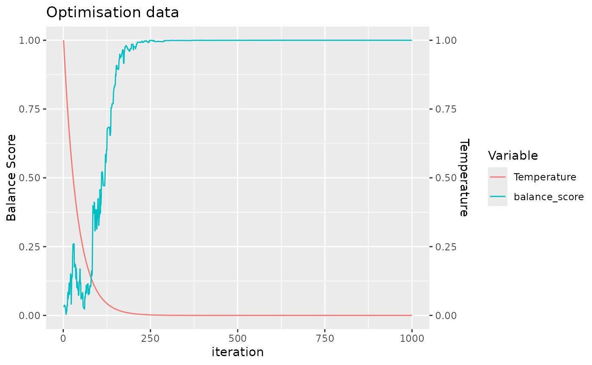

Check for Significant Covariates in Output
check_significance.RdThis function evaluates the significance of covariates based on adjusted p-values. It applies the Bonferroni correction to the p-values associated with each covariate and identifies those that are statistically significant. We do not recommend using this function to conduct hypothesis testing, but instead only as a sanity check to identify which covariates may potentially be problematic.
Value
A data frame listing the covariates that have been found to be statistically significant after adjusting their p-values for multiple testing. If no covariates are found to be significant, the function will return an empty data frame. The return data frame includes columns for the covariate name and the count of significant instances, although the count will typically be one for each listed covariate unless the input output structure allows for duplicate covariate names.
Details
The function first retrieves the results data frame from the provided output object. It then calculates adjusted p-values using the Bonferroni correction method. Covariates with adjusted p-values less than 0.05 are considered statistically significant. The function outputs the names of significant covariates and their counts.
Examples
my_data = simulate_data(n_samples = 100)
allocated_data <- allocate_samples(data = my_data,
id_column = "sample_id",
method = "simulated_annealing",
covariates = c("covariate1", "covariate2", "covariate3"),
batch_size = 13)
#> No blocking variable specified.
#> Covariate: covariate1 - continuous
#> Covariate: covariate2 - continuous
#> Covariate: covariate3 - categorical
#> Number of samples: 100

#> Balance Score of final layout: 0.9999999
#> Joining with `by = join_by(covariate1, covariate2, covariate3, sample_id)`
significant_covariates <- check_significance(allocated_data)
#> No significant covariates